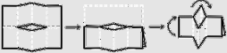
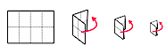
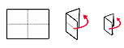
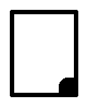
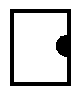
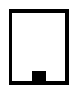
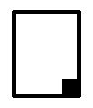
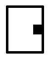

full d'impressió Din A4 Din A3 vertical horitzontal imposició N-up pliegOS Llançat 8+1 8 pàgines a l'anvers i 1 al revers verticals/horitzontals imposades a 8+1 (N-up dúplex)  Llançat 8-up 16 pàgines verticals imposades a 8+8 (N-up dúplex) Llançat 4-up 8 pàgines verticals/horitzontals imposades a 4+4 (N-up dúplex) creu al format de pàgina creu al format del llançat creu al valor de rotació respectem els retalladors ignorem els retalladors mapa d'imposició assaig del mapa d'imposició sense generar cap PDF rang de pàgines i nombre de llibrets per l'assaig pàgina d'inici: pàgina final: nombre de llibrets: per generar el PDF, enganxa-hi o escriu el mapa d'imposició o deixa-ho buit enquadernat un sol llibret llibrets encartats llibrets apilats numeració de pàgines numerem? trieu el color de fons pel numerador fons transparent? posicions i formes de fons pel numerador      puja el PDF a imposar Escull un fitxer PDF (fins a 20M): ensenya'm les vores del plec amaga'm les vores del plec